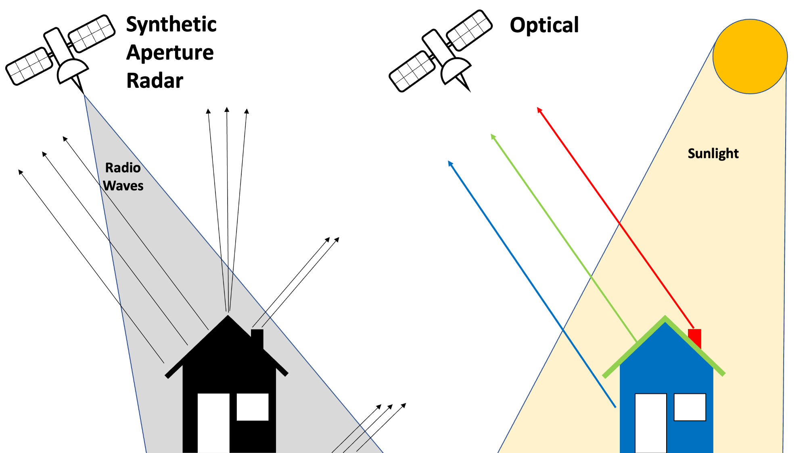
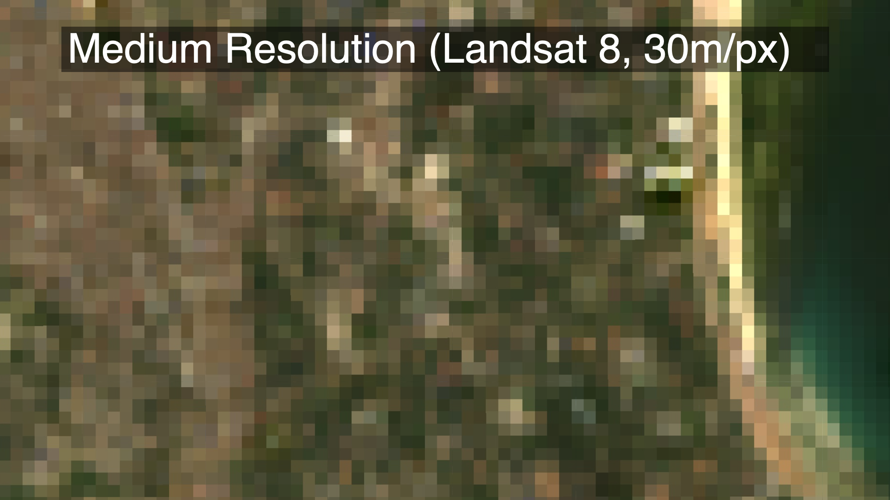
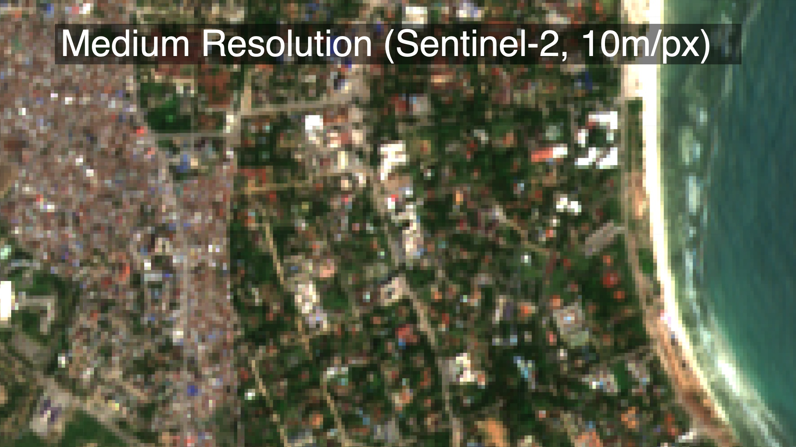
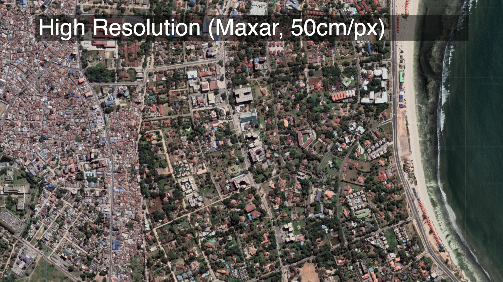
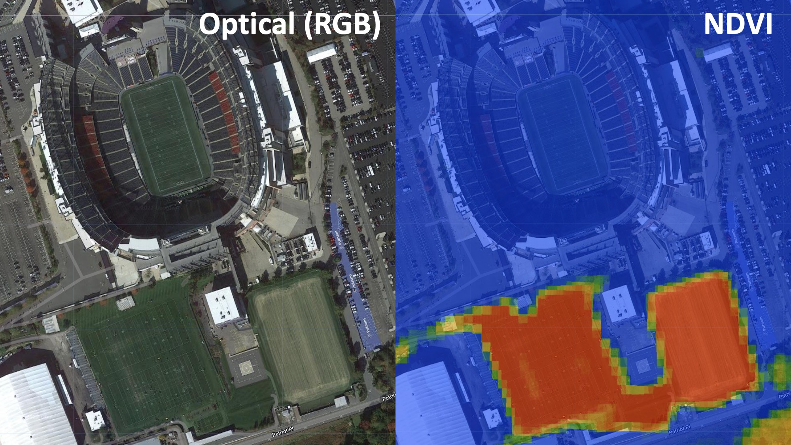

1 Remote Sensing
Before learning how to load, process, and analyze satellite imagery in Google Earth Engine, it will be helpful to know a few basic principles of remote sensing. This section provides a brief overview of some important concepts and terminology that will be used throughout the course, including active and passive sensors; spatial, spectral, and temporal resolution; and orbits.
1.1 Active and Passive Sensors
Remote sensing is the science of obtaining information about an object or phenomenon without making physical contact with the object. Remote sensing can be done with various types of electromagnetic radiation such as visible, infrared, or microwave. The electromagnetic radiation is either emitted or reflected from the object being sensed. The reflected radiation is then collected by a sensor and processed to obtain information about the object.

While most satellite imagery is optical, meaning it captures sunlight reflected by the earth’s surface, Synthetic Aperture Radar (SAR) satellites such as Sentinel-1 work by emitting pulses of radio waves and measuring how much of the signal is reflected back. This is similar to the way a bat uses sonar to “see” in the dark: by emitting calls and listening to echoes.
1.2 Resolution
Resolution is one of the most important attributes of satellite imagery.
here are three types of resolution: spatial, spectral, and temporal.
1.2.1 Spatial Resolution
Spatial resolution governs how “sharp” an image looks. The Google Maps satellite basemap, for example, is really sharp Most of the optical imagery that is freely available has relatively low spatial resolution (it looks more grainy than, for example, the Google satellite basemap),
  
1.2.2 Spectral Resolution
What open source imagery lacks in spatial resolution it often makes up for with spectral resolution. Really sharp imagery from MAXAR, for example, collects
Different materials reflect light differently. An apple absorbs shorter wavelengths (e.g. blue and green), and reflects longer wavelengths (red). Our eyes use that information– the color– to distinguish between different objects. But our eyes can only see a relatively small sliver of the electromagnetic spectrum covering blue, yellow, and red; we can’t see UV or infrared wavelengths, for example, though the extent to which different materials reflect or absorb these wavelengths is just as useful for distinguishing between them. For example, Astroturf (fake plastic grass) and real grass will both look green to us, espeically from a satellite image. But living plants absorb radiation from the sun in a part of the light spectrum that we can’t see. There’s a spectral index called the Normalized Difference Vegetation Index (NDVI) which exploits this fact to isolate vegetation in multispectral satellite imagery. So if we look at Gilette Stadium near Boston, we can tell that the three training fields south of the stadium are real grass (they generate high NDVI values, showing up red), while the pitch in the stadium itself is astroturf (generating low NDVI values, showing up blue).

In other words, even though these fields are all green and indistinguishable to the human eye, their spectral profiles beyond the visible light spectrum differ, and we can use this information to distinguish between them. Below is a plot of the spectral profiles of different materials, including oil.
The European Space Agency’s Sentinel-2 satellite collects spectral information well beyond the visible light spectrum, enabling this sort of analysis. It chops the electromagnetic spectrum up into “bands”, and measures how strongly wavelengths in each of those bands is reflected:

We’ll be using this satellite to distinguish between oil and other materials, similar to the way we were able to distinguish between real and fake grass at Gilette Stadium. First, we’ll have to do a bit of pre-processing on the Sentinel-2 imagery after which we’ll train a machine learning model to identify oil.
1.2.3 Temporal Resolution
Finally, the frequency with which we There is often a tradeoff between spatial and temporal resolution.
The Google Maps basemap is very high resolution, available globally, and is freely available. But it has no temporal dimension: it’s a snapshot from one particular point in time. If the thing we’re interested in involves changes over time, this basemap will be of limited use.
The “revisit rate” is the amount of time it takes for the satellite to pass over the same location twice. The revisit rate is inversely proportional to the satellite’s altitude: the higher the satellite is, the more frequently it can pass over the same location. This generally means that there’s a tradeoff between spatial resolution and temporal resolution: the higher the spatial resolution, the lower the revisit rate. However, some satellite constellations such as Planet’s SkySat are able to achieve both high spatial and temporal resolution by launching lots of small satellites into orbit at once. Below is a comparison of revisit rates for various satellites:
- Sentinel 1: 3 days (6 days as of 23/12/21, since Sentinel-1B was decomisioned)
- Sentinel 2: 5 days
- Landsat 8-9: 8 days
- Planet SkySat: 2-3 hours
1.3 Orbits
The Landsat satellites are in a sun-synchronous orbit, meaning they pass over the same spot on Earth at the same time every day. The Sentinel satellites are in a polar orbit, meaning they pass over the same spot on Earth twice a day, once in the morning and once in the afternoon. NASA have created a great visualisation showing the orbits of the Landsat and Sentinel-2 satellites:
The Sentinel satellites are in a lower orbit than Landsat, meaning they are closer to the Earth and have a higher resolution.